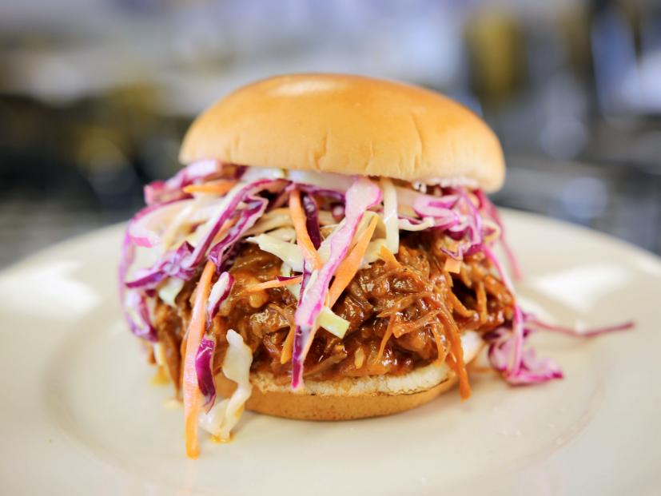

Matt's Famous Pulled Pork & Slaw

This pulled pork and slaw works great on a toasted bun, or by itself.
Pulled Pork
Ingredients
- 1 Slab of bone-in pork shoulder butt (about 3 pounds) (dry rub)
- 1 Cup brown sugar (dry rub)
- 1 Tablespoon paprika (dry rub)
- 1 Teaspoon cumin (dry rub)
- 1 Tablespoon of sea salt (2 teaspoons if using table salt) (dry rub)
- 1 Teaspoon black pepper (dry rub)
- ½ Teaspoon cayenne (dry rub)
- 1 Tablespoon of mustard (dry rub)
- 1 Tablespoon of oil (vegetable or olive) (dry rub)
- 1 Large white or yellow onion
- 1 Green bell pepper
- ½ Cup of chicken stock, broth, or water
- ½ Cup of apple cider vinegar
- 1 Bottle of favorite BBQ sauce
- 1 Pack of brioche buns
Steps
- Pat dry pork with paper towels. Mix together all dry rub ingredients. Spread evenly all over pork. Wrap pork in seran wrap and let sit in fridge for at least 4 hours, or overnight.
- Slice onions and peppers, and place into crock pot. Dump chicken stock and apple cider vinegar on top. Place pork on top of onions and peppers. Cook on low setting for 6-8 hours.
- Pull pork apart with fork or hands. Place all leftover juices, onions, peppers, and bbq sauce into large pot. Cook till ingedients thicken into sauce-like consistency. Stir in pulled pork and simmer for 10-15 minutes. Serve on toasted brioche bun with mayo or aoli.
Slaw
Ingredients
- 1 Head of purple cabbage
- 1 Carrot
- 1 Cup of mayo
- ¼ Cup apple cider or malt vinegar
- ¼ Cup of salt
- 1 Tablespoon of mustard
Steps
- Finely shred cabbage into large mixing bowl. Peel and grate carrot.
- Mix carrots and cabbage with salt and drain in colander for 5-10 minutes. Rinse well. Dry with paper towels or salad spinner.
- Mix mayo, cider vinegar, and mustard in mixing bowl. Toss all together and let sit for 30 minutes. Toss again before serving.